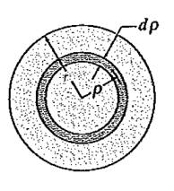

Materyel Mekaniği - 7
Burulma (Torsion)
Eksenel ve eksene dik yüklemelerden biraz daha çetrefil analiz gerektiren bir yük uygulama şekli, bir çubuğun büküldüğü zaman ortaya çıkan burulma durumudur. Burulma bir öğe momentlerle, ya da torklarla dönüşsel olarak yüklendiği zaman ortaya çıkar [1, sf. 224].

Mesela üstteki ilk resimde bir vidanın döndürülmesi görülüyor, bu durumda bir el bir $T$ torku uygular. Bir arabanın tekerlek aksı, şaftı ya da gemilerin pervanesine (propeller) dönüş ileten aks aynı davranışı sergiler. Altta üçüncü resimde görülen tork ilk nokta için $T_1 = P_1 d_1$ ile, ikincisi $T_2 = P_2 d_2$ ile hesaplanabilir.

Burulma deformasyonunun mekaniğine biraz daha yakından bakalım. Bir çubuğu $\phi(x)$ açısına gelecek şekilde büküyoruz, ve bu burulma bir $\gamma$ kaykılma gerginliğine yol açıyor.

Üstteki ilk şekil çubuğun bir $x$ bağlamındaki bir parçasını gösteriyor, altındaki ise o parçanın içindeki daha ufak yarıçaptaki bir parçasını [3, sf. 240].
$\gamma$ büyüklüğünü bulmak için üstteki resimde ikinci figure bakalım, $S^$ ve $S'$ arasındaki uzunluğu, $R^$ ve $S'$ uzunluğuna bölersek (bu yapılabilir çünkü ufak açılar sözkonusu ise tanjant hesabı aşağı yukarı açının kendisine eşittir [2]) istenen sonucu bulabiliriz. Tabii $R^S'$ uzunluğu $\Delta x$, ve $S^S'$ uzunluğu çember çevresinin ufak bir parçası, onu $\rho \Delta \phi$ ile buluruz, bunları bir limit hesabı ile ifade edersek, ve $\Delta x \to 0$ iken
$$ \gamma = \lim_{\Delta x \to 0} \frac{S^S'}{R^S'} = \lim_{\Delta x \to 0} \frac{\rho \Delta \phi}{\Delta x} = \rho \frac{\mathrm{d} \phi}{\mathrm{d} x} $$
O zaman eksenel yuvarlak olan bir birimin burumsal deformasyon için gerginlik-yer değişim (strain-displacement) denklemi
$$ \gamma = \gamma(x,\rho) = \rho \frac{\mathrm{d} \phi}{\mathrm{d} x} \qquad (1) $$
$\phi$'in $x$'e göre türevi alınabildi çünkü formülü $x$'e bağlıdır, bunu üstteki grafikte ilk figürde görüyoruz, $\phi(x)$ açısı $\phi(x+\Delta x)$ açısından farklı. Eğer $\phi$'yi formülsel olarak düşünsek herhalde $x$ arttıkça ona lineer oranla artan bir açı büyüklüğü formülize edilebilirdi.
Kaykılma gerginliği ve stresi arasındaki ilişkiyi daha önce gördük, burada da bir Hooke Kanunu var,
$$ \tau = G \gamma $$
$G$ sabiti kaykılma modülüsü. Ustteki formule (1)'i sokarsak,
$$ \tau = G \rho \frac{\mathrm{d} \phi}{\mathrm{d} x} $$
Bu formül bize bir kesitteki kaykılma streslerinin dağılımını veriyor. Eğer çubuk materyeli homojen (her yerde aynı), yani $G$ sabit ise kaykılma stresi merkezden dışa doğru çıktıkça $\rho$'ya oranlı lineer bir şekilde artacaktır.
Bu stresler sürekli olarak yüzeyde etkili oldukları için bir moment etkisi yaratıyorlar, bu momentlerin toplamı çubuğa uygulanan torka eşit olacaktır. Merkeze yarıçapsal $\rho$ uzaklığında bir $\mathrm{d} A$ parçası düşünelim,

Bu ufak bölgeye etki eden kaykılma stresi $\tau \mathrm{d} A$'dir, ki $\tau$ yarıçap $\rho$'da etkili olan kaykılma stresidir. Bu kuvvetin momenti kuvvet çarpı merkeze olan uzaklık, bu örnekte uzaklık yine yarıçapın kendisi, tüm bu momentleri bulup alan üzerinden entegre edersek,
$$ T = \int_A \rho \left( G \rho \frac{\mathrm{d} \phi}{\mathrm{d} x} \right) \mathrm{d} A $$
Eğer $G$ değişkeni $\rho$'dan bağımsız ise,
$$ T = G \frac{\mathrm{d} \phi}{\mathrm{d} x} \int_A \rho^2 \mathrm{d} A \qquad (2) $$
Entegral içinde kalan kısım $\int_A \rho^2 \mathrm{d} A$ aslında her şekil için belli bir formüle sahip olan kutupsal dönme direnci (polar moment of inertia), notasyonda $I_P$ olarak geçer, bu örnekte bir çember şekli var, bu şekil için görülen entegral
$$ I_P = \int_A \rho^2 \mathrm{d} A $$
Üstteki hesabı yapmak için su şekli düşünelim,

$\mathrm{d} A$'yi şekilde görülen köyü gri ince halka olarak kabul edelim, o halkanın alanı nedir? Bu alanı kenarı halkanın uzunluğu çarpı eni ile hesaplayabiliriz [4, sf. 474]. En olarak sonsuz küçük $\mathrm{d} \rho$ alalım, çevre standart hesap $2\pi\rho$, demek ki $\mathrm{d} A = 2\pi\rho \mathrm{d} \rho$. Tüm entegral,
$$ I_P = \int_A \rho^2 \mathrm{d} A = \int_{0}^{r} \rho^2 (2\pi\rho \mathrm{d} \rho) = 2\pi \int_{0}^{r} \rho^3 \mathrm{d} \rho = 2\pi \frac{1}{4} \rho^4 \bigg\vert_{0}^{r} $$
$$ I_P = \frac{\pi}{2} r^4 $$
Biz (2) ile devam edelim, orada $I_P$ notasyonu kullanalım şimdilik,
$$ T = G \frac{\mathrm{d} \phi}{\mathrm{d} x} I_P $$
$$ \frac{T}{G I_P} = \frac{\mathrm{d} \phi}{\mathrm{d} x} $$
[devam edecek]
Kaynaklar
[1] Gere, Mechanics of Materials
[2] Bayramlı, Normal Diferansiyel Denklemler, Trigonometri
[3] Craig, Mechanics of Materials
[4] Hibbeler, Statics and Mechanics of Materials
Yukarı